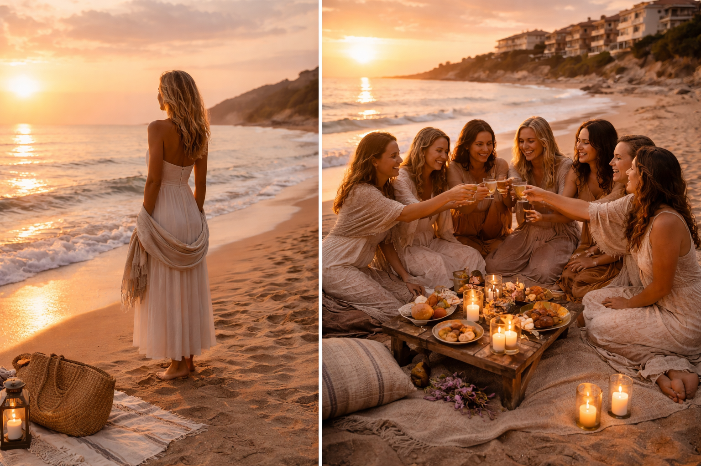

Черный Ретрит:
войди в темноту —
найди себя
Глубокое погружение на берегу Чёрного моря — пространство, где женщина перестаёт бежать и возвращает себя себе.
Вы здесь, потому что
Одно из этого — про вас?
Вы устали держаться
Снаружи всё хорошо. Внутри — пустота, тихое ощущение что «что-то не так». Держитесь, потому что надо. Но силы заканчиваются.
Выгорание не проходит
Отпуск не помогает. Просыпаетесь уже уставшей. Тело болит — врачи говорят «всё в норме». Вы чувствуете: это не просто усталость.
Тревога без причины
Фоновое напряжение, которое не выключается. Или тревога, которая появляется в самый неподходящий момент — и вы не понимаете откуда.
Не понимаете себя
Забыли, чего хотите сами. Живёте в роли — матери, жены, руководителя. А кто вы — вне этих ролей? Ответа нет.
Если хоть одно — про вас, вы попали туда, куда надо.
Это не отдых. Это работа. Настоящая.
Ваш проводник
Ph.Dr. Olga Tureva

Ph.Dr. Olga Tureva
Ольга Тюрева
Доктор философии · Кризисный психолог · Соматолог · Физиотерапевт
34 года практики. Работала в Праге 15 лет. Сейчас — онлайн из Германии и очно на ретритах. Ко мне приходят тогда, когда больше никто не помог: перед операциями, в разводах, после потерь.
Работаю через тело: тазовые кости, позвоночник, меридианы, авторские телесные практики. Кризисная психология — не теория, а ежедневная практика с реальными людьми в реальных кризисах.
Свой метод начала разрабатывать, когда врачи сказали, что моя дочь с гидроцефалией проживёт 7–10 лет. Продала машину, нашла китайского учителя, 9 месяцев училась. Дочери сняли инвалидность — сейчас ей за 30, знает 8 языков. Тело оказалось умнее врачей.
Образование и дипломы

Для кого этот ретрит
Это место создано для вас, если…
Вы потеряли себя
В роли матери, жены, руководителя — вы всем нужны, но забыли, кто вы на самом деле. Пора вспомнить.
- Каждое утро просыпаетесь и думаете: «Это всё?»
- Не можете вспомнить, что по-настоящему радует
- Чувствуете себя нужной всем — и не нужной себе
- Внутри пустота, которую не заполняет ни работа, ни отдых
Хроническая усталость
Даже после отпуска не восстанавливаетесь. Нужна настоящая перезагрузка — глубокая, системная.
- Просыпаетесь уже уставшей, даже после сна
- Отпуск не помогает — через три дня снова в режиме «надо»
- Тело болит, но врачи говорят: всё в норме
- Внутренний шум не выключается даже ночью
Жажда перемен
Вы чувствуете, что стоите на пороге нового этапа. Нужно пространство, чтобы прислушаться к себе и сделать шаг.
- Чувствуете, что живёте «не свою» жизнь
- Откладываете важные решения — снова и снова
- Внутри есть голос, который что-то знает — но вы его не слышите
- Хочется ясности: куда идти и кем быть дальше


Что вы получите
Три столпа трансформации
Глубокое восстановление
10 дней в атмосфере Черного моря и болгарской природы. Медитации на рассвете, звук прибоя, никакого информационного шума — только вы и ваше тело.
Тело · Природа · Тишина- Физиотерапия: коррекция тазовых костей, позвоночника, выравнивание тела
- Работа с банками — снимаем годами накопленное напряжение
- Специальные приборы для растяжки позвоночника
- Техника самостоятельного выравнивания — делаете дома самостоятельно
- Трёхразовое питание с поваром прямо в доме
Внутренняя трансформация
Авторские практики Ph.Dr. Olga Tureva: работа с глубинными установками, психосоматикой и кризисной психологией. Результат — устойчивое внутреннее состояние.
Психология · Практики · Рост- Активация биокомпьютера — включение внутреннего видения
- Работа с родовыми программами: что было заложено в детстве
- Перерождение — авторская техника осознанного переживания
- Рисование с закрытыми глазами — выгрузка бессознательного
- ThetaHealing — работа на уровне подсознания
Пространство для своих
Маленькая, тщательно отобранная группа. Вы поддерживаете друг друга, делитесь опытом — связи, которые остаются надолго после ретрита.
Сообщество · Поддержка · Связи- Пока одна группа с закрытыми глазами — вторая становится её опорой
- Вы ведёте другую за руку к морю, к столу — и сами проходите через это
- В такой глубине рождается настоящая близость — не светская, а человеческая
- После ретрита группа остаётся на связи
Формат
10 дней, которые меняют всё
10 дней / 9 ночей
Не отпуск. Ровно столько, сколько нужно, чтобы войти в глубину и выйти с устойчивым новым состоянием.
- Дни 1–2: замедление, знакомство, настрой
- Дни 2–5: Группа А — работа с закрытыми глазами, Группа Б — поддержка
- День 6: интеграция, обмен опытом, смена ролей
- Дни 7–9: Группа Б погружается в маски, Группа А — опора
- День 10: ритуал закрытия, личный план на три месяца «после»
Меньше — недостаточно. Больше — не нужно. Десять дней выверены годами практики.
Малая группа до 8 чел.
Тщательный отбор по анкете и личному созвону. Ведущая знает каждую участницу лично.
- Группа делится на две части — ключевой механизм ретрита
- Рядом всегда есть кто-то: ведут за руку к морю, к столу
- Потом группы меняются — и каждая проходит через оба состояния
- В такой уязвимости рождается близость, которая остаётся на годы
Болгария · Черное море
Святой Влас — тихий курорт. Отдельный дом в 200 метрах от моря. Трёхразовое питание с поваром.
- 200 метров от моря — утренние медитации у воды, закат с прибоем
- Новые апартаменты: вся мебель, постельное, техника — только новое
- Трёхразовое питание: повар готовит прямо в доме
- Аэропорт Бургас — 35 км, трансфер при раннем бронировании
- С мая море уже 20–22°, плавать с первого дня
Москва → Стамбул → Бургас. Болгария — Шенген с января 2025.
Безопасность 24/7
Кризисный психолог с 34-летним опытом рядом в любое время суток. Вы никогда не остаётесь одна.
- Собеседование до ретрита — исключаем противопоказания
- Физическое сопровождение 24/7 — за руку в любой момент
- Выход из практики в любой момент без объяснений
- Не берём людей с психиатрическими диагнозами — это ответственность

Только для участниц
Бонусы ретрита
Трансфер из Бургаса
Встречаю лично в аэропорту и везу до дома ретрита — 35 км без такси и поиска дороги.
При раннем бронированииФизиотерапия
Индивидуальная диагностика и коррекция тела: тазовые кости, позвоночник, выравнивание. Уходите с техникой — 5 минут в день дома.
Включено в программуТехника выхода из стресса
Авторская техника Ph.Dr. Olga Tureva — работает у каждого мгновенно. Остаётся с вами навсегда.
Навык на всю жизньРеферальная программа
Пригласи подругу на ретрит — и получи скидку 10% после того, как она оплатит своё участие. Без ограничений по количеству приглашений.
Вопросы и ответы
Всё, что важно знать до приезда
Чёрный ретрит — это 10 дней интенсивной работы с телом и психикой в условиях сенсорного ограничения. Участницы большую часть дня находятся с закрытыми глазами (мягкая тёмная повязка), что позволяет глубоко уйти внутрь себя. Практики — телесная терапия, кризисная психология, ThetaHealing, физиотерапия. Болгария, Святой Влас, малая группа до 8 человек.
Потому что ретрит — интенсивная работа с психикой и телом. На собеседовании я узнаю вашу историю, выясняю, есть ли противопоказания, и определяю, готовы ли вы сейчас к этому формату. Если понимаю, что сейчас не время — говорю честно. Я не набираю группу ради группы: каждая участница приходит осознанно.
Да. Маска — это мягкая тёмная повязка, как в самолёте. Вы можете снять её в любой момент без объяснений. Никакого принуждения. Рядом всегда кто-то есть: в туалет, к морю, к столу — вас ведут за руку. Вы никогда не остаётесь одна в темноте.
Это нормальная часть процесса — страх означает, что работа идёт. Я как кризисный психолог слежу за состоянием каждой участницы. При необходимости — выходим из практики, работаем индивидуально, даём время. Никто не остаётся один в сложном состоянии.
Да. Острые психотические состояния, тяжёлые психиатрические диагнозы в стадии обострения, беременность. Обо всём важном говорим на предварительном созвоне. Иногда я честно говорю: сейчас не время — и предлагаю другой формат. Ваша безопасность важнее.
Включено: проживание 10 дней, трёхразовое питание (повар в доме), вся программа ретрита, индивидуальная кризисная сессия, физиотерапевтическая диагностика и коррекция тела, трансфер из Бургаса (при раннем бронировании), все материалы для практик.
Не включено: перелёт, трансфер из Варны (50% скидка), личные расходы.
Нет. Формат выстроен как единый цикл. Уйти в середине — значит прервать процесс в самом уязвимом месте. Пожалуйста, планируйте заранее и закрывайте все дела до приезда.
Болгария вступила в Шенген с января 2025 года. Удобный маршрут: Москва или Петербург → Стамбул → Бургас (прямые рейсы с мая). Из Бургаса до Святого Власа 35 км. Трансфер из Бургаса — бонус для тех, кто заранее бронирует место.
При отмене за 30 и более дней — предоплата возвращается полностью. За 14–30 дней — 50%. Менее чем за 14 дней — предоплата не возвращается, но место можно передать подруге (по согласованию). Форс-мажоры рассматриваем индивидуально.
Только на русском языке. Группа полностью русскоговорящая. Глубокая психологическая работа требует родного языка — точных слов и тонких нюансов.
Стоимость
Всё включено — проживание, питание, программа, физиотерапия и трансфер.
- Полная стоимость: уточняется на собеседовании — зависит от даты и типа размещения
- Включено: проживание, питание (повар), вся программа, кризисная сессия, физиотерапия, материалы
- Бонус раннего бронирования: трансфер из Бургаса бесплатно
- Оплата: предоплата при бронировании, остаток — за 30 дней до заезда
Программа по дням
10 дней — выверенный цикл. Каждый день выстроен так, чтобы вести вас глубже.
- День 1: приезд, знакомство, вечерний первый круг
- Дни 2–3: замедление, тело, Группа А начинает работу с повязками
- Дни 4–5: углубление, кризисная работа, ThetaHealing
- День 6: интеграция, обмен опытом, смена ролей
- Дни 7–8: Группа Б — закрытые глаза, Группа А — поддержка
- День 9: физиотерапия, коррекция тела, техника выхода из стресса
- День 10: ритуал закрытия, личный план на три месяца, вечер у моря
Почему это работает
Сенсорное ограничение — один из самых мощных инструментов изменения, известных науке.
- Нейронаука: в сенсорном ограничении активируется дефолтная сеть мозга — зона самопознания и переработки травм
- Тело как ключ: психологические блоки хранятся в теле — через физиотерапию мы обходим ментальные защиты
- ThetaHealing: работа в тета-ритме (4–7 Гц) позволяет переписывать убеждения на уровне подсознания
- 10 дней: именно столько нужно для формирования нового нейронного паттерна
Готовы сделать шаг?
Запишитесь на бесплатную консультацию — узнайте все детали ретрита и решите, подходит ли он именно вам. Отвечу лично.
Записаться на ретритОтвечу в течение часа. Без обязательств.